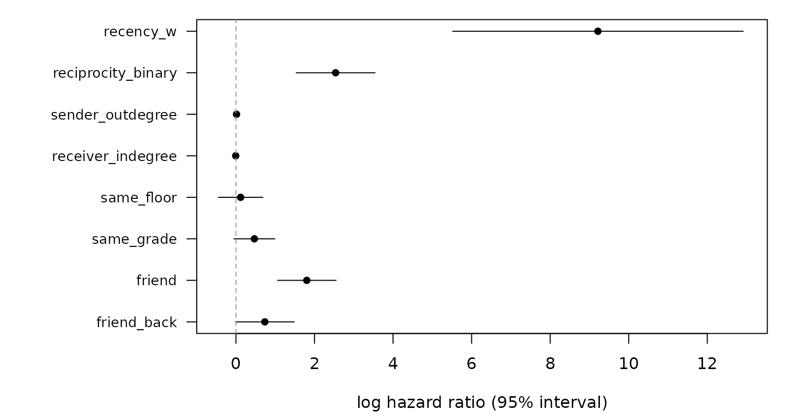
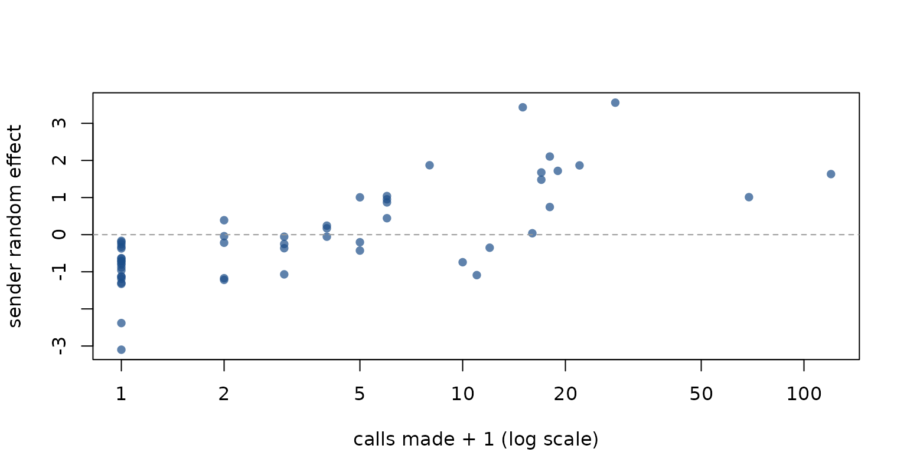

Case study: Social Evolution
Source:vignettes/articles/case-social-evolution.Rmd
case-social-evolution.RmdCase study: Social Evolution
The Social Evolution study (Madan et al. 2011) recorded phone calls among undergraduates in an MIT residence hall, together with each student’s floor and grade and two waves of a friendship survey. This page models who calls whom from three kinds of information:
- the calling history itself (endogenous statistics),
- actor attributes shared by caller and callee (homophily),
- friendship nominations reported in the survey before the call.
The code runs when this page is built.
Data intake
data(social_evolution_calls)
data(social_evolution_actors)
data(social_evolution_friendship)
calls <- standardize_event_log(social_evolution_calls, drop_loops = TRUE)
c(calls = nrow(calls), callers = length(unique(c(calls$sender, calls$receiver))),
days = max(calls$time))
#> calls callers days
#> 439.00000 54.00000 42.12595
head(social_evolution_actors)
#> id present floor gradeType
#> 1 Actor 1 TRUE 3 5
#> 2 Actor 2 TRUE 5 1
#> 3 Actor 3 TRUE 5 2
#> 4 Actor 4 TRUE 2 2
#> 5 Actor 5 TRUE 4 1
#> 6 Actor 6 TRUE 4 2
table(social_evolution_friendship$time)
#>
#> 2.14039351851852 42.1403935185185
#> 376 390standardize_event_log() checks and sorts the log: it
removes loops, rows with missing values and duplicated
(sender, receiver, time) triples, of which this log has 0.
The 439 calls involve 54 of the 84 students in the actor table. In that
table 84 of the 84 students are recorded as present, so no dyad has to
be removed from the risk set for absence. The risk set below is the set
of dyads among the students who appear in the calls.
The friendship survey has two waves, on day 2.14 and day 42.14. The second wave comes after the last call (day 42.13), so only the first wave can inform a call.
Case-control sample and covariates
Each call is matched with five non-events, dyads drawn uniformly
among the students who appear in the calls
(sample_non_events() with its defaults,
scope = "all" and mode = "one"). Endogenous
statistics are computed against the history of calls only (the sampled
non-events never enter it). The time since the dyad’s last call is
mapped to a weight in (0, 1] with transform_recency(), with
weight 0 for a dyad that has not called before.
cc <- sample_non_events(calls, n_controls = 5, seed = 2008)
cc <- endogenous_features(cc, stats = c("recency", "reciprocity_binary",
"sender_outdegree", "receiver_indegree"))
cc$recency_w <- transform_recency(cc$recency)
cc$recency_w[is.na(cc$recency_w)] <- 0
for (s in c("reciprocity_binary", "sender_outdegree", "receiver_indegree")) {
cc[[s]][is.na(cc[[s]])] <- 0
}Actor attributes are attached to both ends of every row with
attach_static_covariates() and turned into homophily
indicators. Students with no recorded grade do not count as sharing a
grade.
actors <- social_evolution_actors[, c("id", "floor", "gradeType")]
cc <- attach_static_covariates(cc, sender_covariates = actors,
receiver_covariates = actors, actor_col = "id")
cc$same_floor <- as.integer(cc$sender_floor == cc$receiver_floor)
cc$same_grade <- as.integer(!is.na(cc$sender_gradeType) &
!is.na(cc$receiver_gradeType) &
cc$sender_gradeType == cc$receiver_gradeType)Friendship is a time-varying dyadic covariate: for each row, the
latest survey record for the dyad with a time strictly before the row’s
time. friend is the caller’s nomination of the callee,
friend_back the callee’s nomination of the caller.
fr <- social_evolution_friendship
friend_at <- function(s, r, t) {
k <- fr$sender == s & fr$receiver == r & fr$time < t
if (!any(k)) 0L else fr$replace[k][which.max(fr$time[k])]
}
cc$friend <- mapply(friend_at, cc$sender, cc$receiver, cc$time)
cc$friend_back <- mapply(friend_at, cc$receiver, cc$sender, cc$time)
prop <- function(v) tapply(cc[[v]], cc$event, mean)
rbind(friend = prop("friend"), same_floor = prop("same_floor"),
same_grade = prop("same_grade")) # columns: controls (0), calls (1)
#> 0 1
#> friend 0.08063781 0.7608200
#> same_floor 0.13849658 0.2118451
#> same_grade 0.18314351 0.710706276% of calls go to a student the caller had nominated as a friend, against 8% of sampled non-events; 21% of calls and 14% of non-events stay on the caller’s floor.
Conditional logistic regression
rem(method = "clogit") fits the case-5-control design.
Four specifications share the same sample:
specs <- list(
endogenous = event ~ recency_w + reciprocity_binary + sender_outdegree +
receiver_indegree,
homophily = event ~ recency_w + reciprocity_binary + sender_outdegree +
receiver_indegree + same_floor + same_grade,
friendship = event ~ recency_w + reciprocity_binary + sender_outdegree +
receiver_indegree + friend + friend_back,
full = event ~ recency_w + reciprocity_binary + sender_outdegree +
receiver_indegree + same_floor + same_grade +
friend + friend_back)
fits <- lapply(specs, rem, data = cc, method = "clogit", stratum = "stratum")
aic <- sapply(fits, function(f) stats::AIC(logLik(f)))
data.frame(AIC = round(aic, 1), delta_AIC = round(aic - min(aic), 1))
#> AIC delta_AIC
#> endogenous 450.8 103.7
#> homophily 401.3 54.3
#> friendship 347.0 0.0
#> full 347.7 0.7The friendship specification has the lowest AIC. Adding friendship to the endogenous model lowers the AIC by 103.7; adding the two homophily indicators lowers it by 49.5.
est <- ct[, "coef"]; se <- ct[, "se(coef)"]
o <- rev(seq_along(est))
op <- par(mar = c(4, 10, 1, 1))
plot(est[o], seq_along(est), xlim = range(est - 2 * se, est + 2 * se, 0),
yaxt = "n", pch = 16, xlab = "log hazard ratio (95% interval)", ylab = "")
segments(est[o] - 1.96 * se[o], seq_along(est), est[o] + 1.96 * se[o], seq_along(est))
axis(2, at = seq_along(est), labels = names(est)[o], las = 1, cex.axis = 0.85)
abline(v = 0, col = "grey60", lty = 2)
par(op)The recency weight runs from 0 (no earlier call on the dyad) to 1 (a
call just before), so its coefficient compares those two extremes:
hazard ratio 10,058 (95% interval 248.95–406,330.36), which sets the
scale of the figure. In the full model, a call to a nominated friend has
hazard ratio 6.07 (95% interval 2.88–12.80), and a call that
reciprocates an earlier call in the other direction 12.66 (4.64–34.53).
The interval for same_floor is 0.64–1.99 and for
same_grade 0.95–2.69.
Sender random effect
Some students call far more than others. A sender random effect
absorbs these differences without a statistic for them. The
re() term needs the one-control (degenerate logistic)
design of rem(method = "gam"), so a case-1-control sample
is drawn and widened with widen_case_control(), which keeps
the sender of each call and of its control (sender_ev,
sender_nv).
cc1 <- sample_non_events(calls, n_controls = 1, seed = 2008)
cc1 <- endogenous_features(cc1, stats = "sender_outdegree")
cc1$sender_outdegree[is.na(cc1$sender_outdegree)] <- 0
cc1 <- attach_static_covariates(cc1, sender_covariates = actors,
receiver_covariates = actors, actor_col = "id")
cc1$same_floor <- as.integer(cc1$sender_floor == cc1$receiver_floor)
cc1$friend <- mapply(friend_at, cc1$sender, cc1$receiver, cc1$time)
w <- widen_case_control(cc1, covariates = c("same_floor", "friend",
"sender_outdegree"))With a single control per call, the history statistics separate calls from controls almost perfectly (a sampled dyad has rarely called before), so the models below use the friendship and floor indicators. The sender effect enters either as the sender’s number of earlier calls or as a random effect:
g_base <- rem(~ same_floor + friend, data = w, method = "gam", gam_method = "REML")
g_out <- rem(~ same_floor + friend + sender_outdegree, data = w,
method = "gam", gam_method = "REML")
g_re <- rem(~ same_floor + friend + re(sender), data = w,
method = "gam", gam_method = "REML")
gaic <- c(base = stats::AIC(g_base$fit), outdegree = stats::AIC(g_out$fit),
random_effect = stats::AIC(g_re$fit))
round(gaic, 1)
#> base outdegree random_effect
#> 265.6 238.6 170.5
summary(g_re)$s.table
#> edf Ref.df Chi.sq p-value
#> s(.RE_sender):.I 31.94933 53 80.01819 0The random effect has 31.9 effective degrees of freedom for 54 senders, and the model with it has an AIC 95.1 lower than the model without a sender term and 68.1 lower than the one with the sender’s earlier calls.
b <- stats::coef(g_re)
b <- b[grep("RE_sender", names(b))]
lev <- levels(factor(c(w$sender_ev, w$sender_nv)))
n_sent <- table(factor(calls$sender, levels = lev))
plot(as.integer(n_sent) + 1, b, log = "x", pch = 16,
col = grDevices::adjustcolor("#1d4e89", 0.7),
xlab = "calls made + 1 (log scale)", ylab = "sender random effect")
abline(h = 0, col = "grey60", lty = 2)
Each point is a student. Students who made no calls appear only as senders of sampled non-events, which places their effects below zero. The Spearman correlation between a student’s random effect and the number of calls the student made is 0.76.
References
Madan A, Cebrian M, Moturu S, Farrahi K, Pentland A (2011). Sensing the “health state” of a community. IEEE Pervasive Computing 11(1), 36–45. https://doi.org/10.1109/MPRV.2011.79